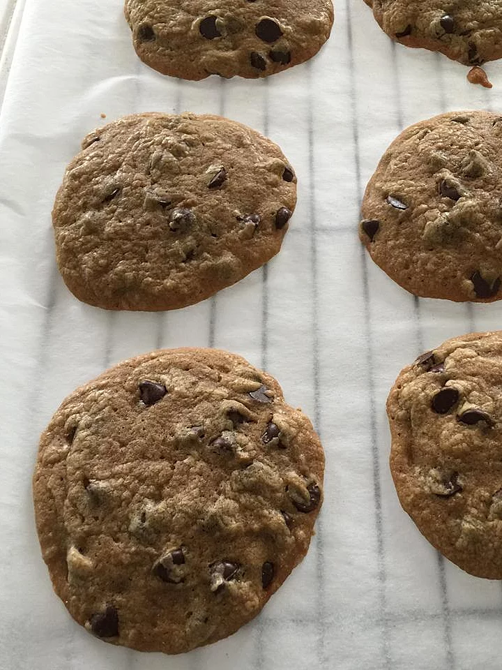

Chocolate Chip Cookie

Description
Ingredients
- 2 cups all-purpose flour
- ½ teaspoon salt
- ½ teaspoon baking soda
- ¾ cup unsalted butter, melted
- 1 cup packed brown sugar
- ½ cup white sugar
- 1 tablespoon vanilla extract
- 1 egg
- 1 egg yolk
- 2 cups semisweet chocolate chips
Steps
Preheat the oven to 325 degrees F (165 degrees C). Grease cookie sheets or line with parchment paper.
Sift together the flour, baking soda and salt; set aside.
In a medium bowl, cream together the melted butter, brown sugar and white sugar until well blended. Beat in the vanilla, egg, and egg yolk until light and creamy. Mix in the sifted ingredients until just blended. Stir in the chocolate chips by hand using a wooden spoon. Drop cookie dough 1/4 cup at a time onto the prepared cookie sheets. Cookies should be about 3 inches apart.
- Bake for 15 to 17 minutes in the preheated oven, or until the edges are lightly toasted. Cool on baking sheets for a few minutes before transferring to wire racks to cool completely.